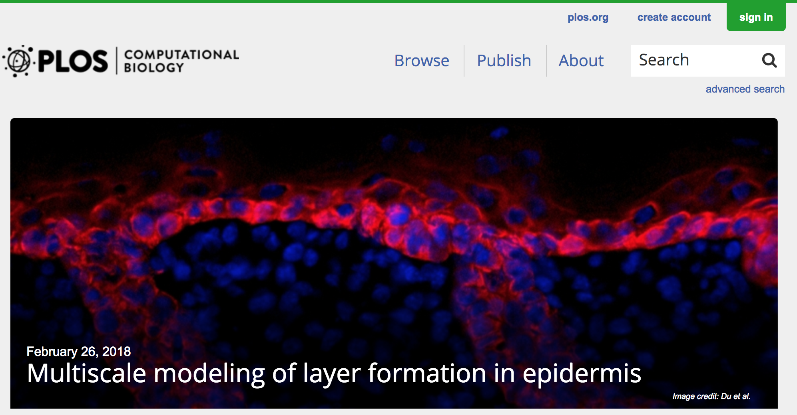

Research

Journal Articles
- Abbey D'Ovidio Long, Bo Deng, and Huijing Du (2026) Dynamical Analysis of an Impulsive Model of Cancer Cell Populations Under Radiotherapy. Mathematical Medicine and Biology.
- Dandan Zheng, Kiersten Preuss, Michael T Milano, Xiuxiu He, Lang Gou, Yu Shi, Brian Marples, Raphael Wan, Hongfeng Yu, Huijing Du, Chi Zhang (2025) Mathematical modeling in radiotherapy for cancer: a comprehensive narrative review. Radiation Oncology, 20, 49.
- Chayu Yang, Yu Jin, and Huijing Du (2024) Dynamics of epidemic models incorporating a hospitalization compartment with a nonlinear recovery rate. International Journal of Biomathematics, 2450119.
- Dandan Zheng, Paul M Grandgenett, Qi Zhang, Michael Baine, Yu Shi, Qian Du, Xiaoying Liang, Jeffrey Wong, Subhan Iqbal, Kiersten Preuss, Ahsan Kamal, Hongfeng Yu, Huijing Du, Michael A Hollingsworth, Chi Zhang (2024) radioGWAS links radiome to genome to discover driver genes with somatic mutations for heterogeneous tumor image phenotype in pancreatic cancer. Scientific Reports, 14, 12316.
- Yu Shi, Hannah Tang, Jianxin Sun, Xinyan Xie, Huijing Du, Dandan Zheng, Chi Zhang, Hongfeng Yu (2023) Tissue-Specific Color Encoding and GAN Synthesis for Enhanced Medical Image Generation. 2023 IEEE International Conference on Big Data (BigData), 4344--4349.
- Yu Shi, Hannah Tang, Michael J Baine, Michael A Hollingsworth, Huijing Du, Dandan Zheng, Chi Zhang, Hongfeng Yu (2023) 3DGAUnet: 3D Generative Adversarial Networks with a 3D U-Net Based Generator to Achieve the Accurate and Effective Synthesis of Clinical Tumor Image Data for Pancreatic Cancer. Cancers, 15(23):5496.
- Preuss, Kiersten, Nate Thach, Xiaoying Liang, Michael Baine, Justin Chen, Chi Zhang, Huijing Du, Hongfeng Yu, Chi Lin, Michael A. Hollingsworth, and Dandan Zheng (2022) Using Quantitative Imaging for Personalized Medicine in Pancreatic Cancer: A Review of Radiomics and Deep Learning Applications. Cancers, 14(7):1654.
- Huijing Du, Margherita Maria Ferrari, Christine Heitsch, Christine Mennicke, Blair Sullivan, Bin Xu (2020) Discrete Mathematical Analysis of the Secondary Structure of the RNA Molecules. In: Rebecca Segal, Blerta Shtylla, and Suzanne Sindi (Eds.) Using Mathematics to Understand Biological Complexity. Association for Women in Mathematics Series, 22: 55--81, Springer.
- Huijing Du, Yuan Liu, Yingjie Liu, Zhiliang Xu (2019) Well-balanced discontinuous Galerkin method for shallow water equations with constant subtraction techniques on unstructured meshes. Journal of Scientific Computing, 81: 2115--2131.
- Yangyang Wang, Christian Guerrero-Juarez, Yuchi Qiu, Huijing Du, Weitao Chen, Seth Figueroa, Maksim Plikus, Qing Nie (2019) A multiscale hybrid mathematical model of epidermal-dermal interactions during skin wound healing. Experimental Dermatology, 28(4), 493-502.
- Yutong Sha, Daniel Haensel, Guadalupe Gutierrez, Huijing Du, Xing Dai, Qing Nie (2019) Intermediate cell states in epithelial-to-mesenchymal transition. Physical Biology, 16, 021001.
- Huijing Du, Yangyang Wang, Daniel Haensel, Briana Lee, Xing Dai, Qing Nie (2018) Multiscale Modeling of Layer Formation in Epidermis. PLoS Computational Biology, 14(2), e1006006. Featured on journal homepage.
- Lina Meinecke, Praveer Sharma, Huijing Du, Lei Zhang, Qing Nie and Thomas Schilling (2018) Modeling Craniofacial Development Reveals Spatiotemporal Constraints on Robust Patterning of the Mandibular Arch. PLoS Computational Biology, 14(11), e1006569.
- William R. Holmes, Nabora Soledad Reyes de Mochel, Qixuan Wang, Huijing Du, Tao Peng, Michael Chi ang, Olivier Cinquin, Ken Cho and Qing Nie (2017) Gene Expression Noise Enhances Robust Organization of the Early Mammalian Blastocyst. PLoS Computational Biology, 13(1), e1005320.
- Zhiliang Xu, Dinshaw S. Balsara and Huijing Du (2016) Divergence-Free WENO Reconstruction-Based Finite Volume Scheme for Solving Ideal MHD Equations on Triangular Meshes. Communications in Computational Physics, 19(4), 841-880.
- Huijing Du, Qing Nie and William R. Holmes (2015) The Interplay between Wnt Mediated Expansion and Negative Regulation of Growth Promotes Robust Intestinal Crypt Structure and Homeostasis. PLoS Computational Biology, 11(8), e1004285.
- Dinshaw S. Balsara, Chad Meyer, Michael Dumbser, Huijing Du and Zhiliang Xu (2013) Efficient Implementation of ADER Schemes for Euler and Magnetohydrodynamical Flows on Structured Meshes - Speed Comparisons with Runge-Kutta Methods. Journal of Computational Physics, 235, 934-969.
- Huijing Du, Zhiliang Xu, Morgen Anyan, Oleg Kim, W. Matthew Leevy, Joshua D. Shrout and Mark Alber (2012) High Density Waves of the Bacterium Pseudomonas aeruginosa in Propagating Swarms Result in Efficient Colonization of Surfaces. Biophysical Journal, 103(3), 601-609.
- Cameron Harvey, Huijing Du, Zhiliang Xu, Dale Kaiser, Mark Alber and Igor Aranson (2012) Intercon nected Cavernous Structure of Bacterial Fruiting Bodies. PLoS Computational Biology, 8(12), e1002850.
- Huijing Du, Zhiliang Xu, Joshua Shrout and Mark Alber (2011) Multiscale Modeling of Pseudomonas aeruginosa Swarming. Mathematical Models and Methods in Applied Sciences, 21 Suppl., 939-954.
- Zhiliang Xu, Yingjie Liu, Huijing Du, Guang Lin and Chi-Wang Shu (2011) Point-wise Hierarchical Reconstruction for Discontinuous Galerkin and Finite Volume Methods for Solving Conservation Laws. Journal of Computational Physics, 230(17), 6843-6865.
- Xionghua Wu, Huijing Du and Weibin Kong (2008) Differential Quadrature Trefftz Method for Poisson- type Problems on Irregular Domains. Engineering Analysis with Boundary Elements, 32(5), 413-423.
- Huijing Du and Xionghua Wu (2005) Radial Basis Functions based Differential Quadrature Domain De- composition Method on Irregular Domains. Numerical Mathematics, A Journal of Chinese Universities, S1, 165-169.
Refereed Conference Proceedings
- Dandan Zheng, Paul M Grandgenett, Qi Zhang, Michael Baine, Yu Shi, Qian Du, Xiaoying Liang, Jeffrey Wong, Subhan Iqbal, Kiersten Preuss, Ahsan Kamal, Hongfeng Yu, Huijing Du, Michael A Hollingsworth, Chi Zhang (2022) RGWAS: A Novel Genome-Wide Association Study to Link Genomics to Radiomics for Pancreatic Cancer. International Journal of Radiation Oncology, Biology, Physics, 114(3) Supplement: e129-e130.
- Huijing Du, Zhiliang Xu, Morgen Anyan, Oleg Kim, W. Matthew Leevy, Joshua D. Shrout and Mark Alber (2012) Pseudomonas aeruginosa Cells Alter Environment to Efficiently Colonize Surfaces using Fluid Dynamics. Proceedings of the ASME 2012 Summer Bioengineering Conference (SBC 2012).